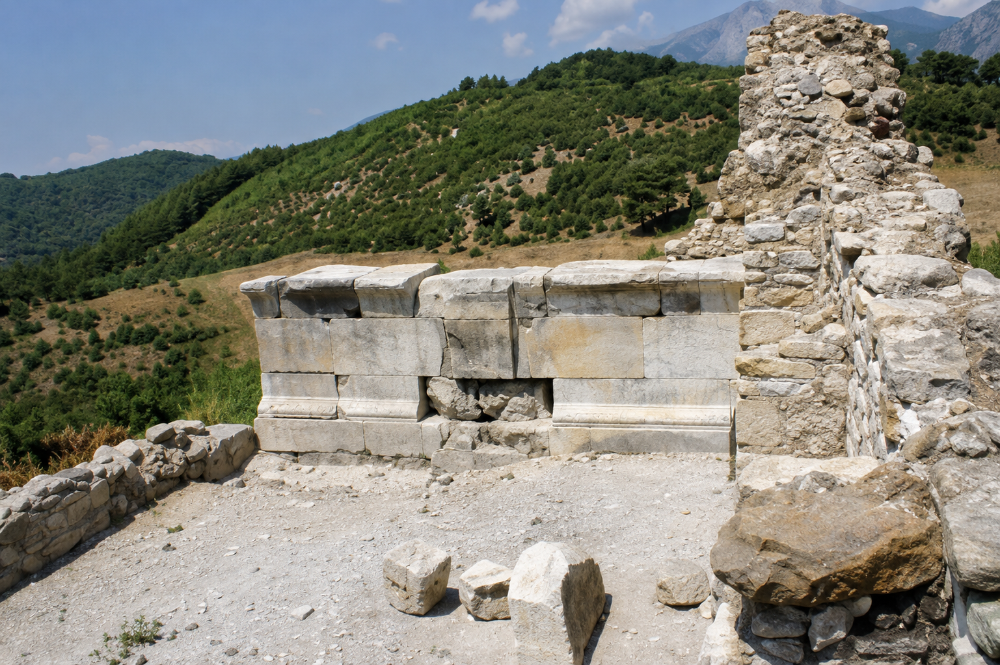
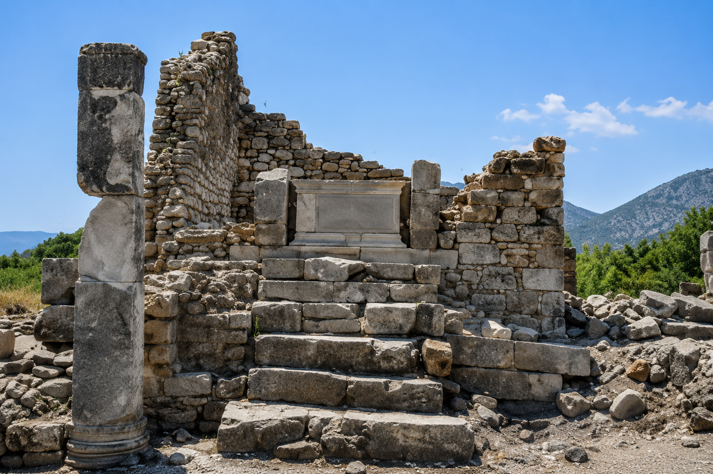

When I Saw the Asclepius of Aspendos...
When the recently discovered statues of Asclepius and Telesphoros from Aspendos were announced, they immediately took me back many years. I found myself remembering the excavation and restoration of the Sanctuary of Asclepius and Hygieia at Rhodiapolis, where I worked in 2009.
Perhaps this is one of the most rewarding aspects of archaeology. Sometimes a single artifact is enough to bring you back to an excavation, to long days among the stones, and to the people with whom you shared those experiences.
Rhodiapolis is unique because it is home to the only known Asklepieion identified in Lycia so far.
In the ancient world, Asklepieia were important healing sanctuaries where patients sought recovery through both religious rituals and the medical practices of their time. What makes Rhodiapolis especially remarkable is the physician Herakleitos, who not only dedicated a sanctuary to Asclepius and Hygieia but also established a library as part of the Asklepieion. Inscriptions identify this building as a medical library, suggesting that the site valued the preservation of medical knowledge alongside healing.
During the 2009 excavation season, most of the Asklepieion complex was uncovered. The complex was organized around a large courtyard with rooms originally designed for the treatment of patients. Excavations reached the original floor levels in all of these rooms. The evidence showed that they had been reused for different purposes in later periods. While the upper layers contained everyday household pottery, the original floors produced second-century AD coins, fragments of medical instruments, and contemporary pottery. These finds clearly connected the earliest phase of the building with its function as an Asklepieion.
The library beside the Asklepieion was another major focus of our work that year. Although its function had already been confirmed by an inscription discovered in 2007, the excavation revealed many new details. According to the inscription, Herakleitos designed the building as a medical library together with the Asklepieion. Unfortunately, it had been heavily damaged by looting, and its statue base had even been blown apart with explosives. During the excavation, the scattered architectural blocks were carefully documented, studied, and returned to their original positions. Symmetrical wall niches and traces of thin marble revetment also helped us better understand the building's original appearance.

(While working on this building, I was also trying to learn how to drive a tractor. One day, I came dangerously close to driving it over a cliff. Perhaps that experience is one of the reasons why I still do not have a driver's license.)
Another important part of that season was the excavation of the Sanctuary of Asclepius and Hygieia itself. Like many other structures at the site, it had suffered extensive damage from illegal excavations. Its façade had completely collapsed, and architectural blocks were scattered across the area. During the restoration, the blocks were documented, studied, and, whenever possible, returned to their original locations.

One of the most interesting discoveries was the statue base along the rear wall. It preserved two separate settings—one circular and one rectangular. Based on their form and the architectural evidence, they were interpreted as the positions of the statues of Hygieia and Asclepius. At the time, however, only the bases remained. The statues themselves had long since disappeared.
Looking at the newly discovered statues from Aspendos, I could not help thinking of those empty bases at Rhodiapolis. Different cities, different stories... This is often how archaeology works. A discovery in one place can suddenly remind you of another site you excavated years ago. Over time, pieces that once seemed unrelated begin to come together and form a much larger story.
Perhaps that is why archaeology is not only about uncovering the past. It is also about seeing what we already know from a new perspective.
After many years, excavations have finally resumed at Rhodiapolis this season. I sincerely wish the new team every success, and I hope they make many important discoveries while preserving the archaeological context that gives those finds their true meaning.
Note: The photographs of Rhodiapolis used in this article are taken from ANMED 2010-8. Their image quality has been enhanced with the assistance of AI-based image restoration tools.
HME.